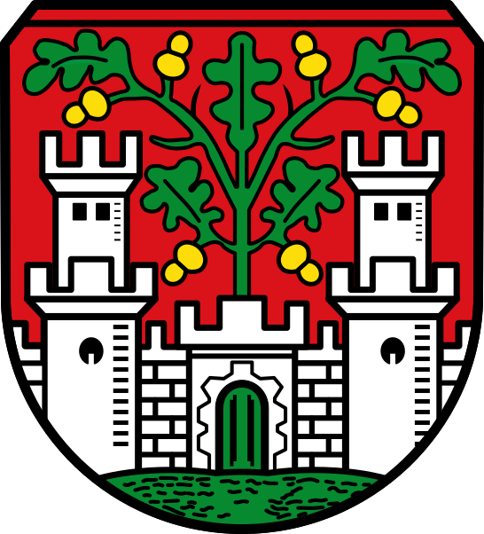
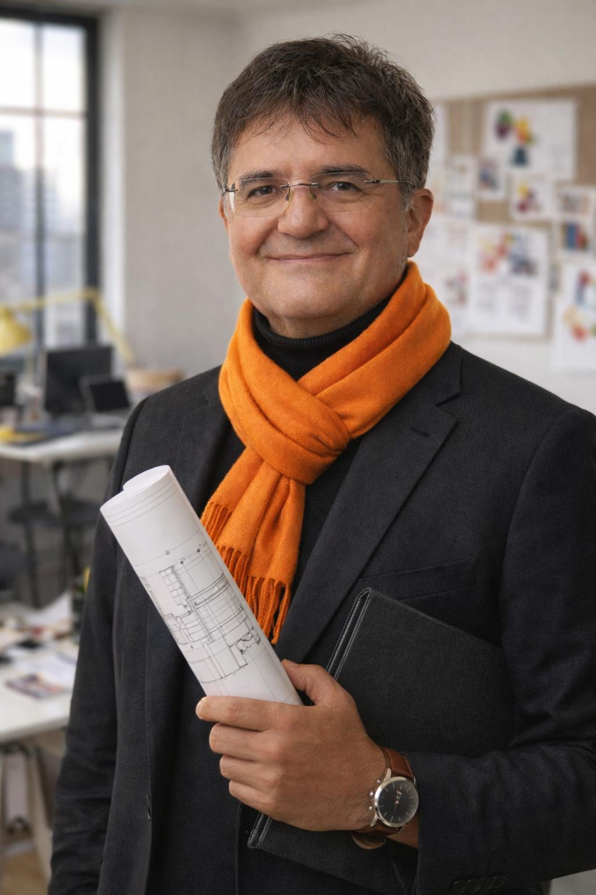

Ich lebe hier, ich kenne die Menschen, und ich erlebe täglich, wo unsere Stadt gut funktioniert – und wo es im Alltag hakt. Genau deshalb engagiere ich mich seit vielen Jahren kommunalpolitisch: nicht aus Ideologie, sondern aus Verantwortung für das Zusammenleben in unserer Stadt.
Die Innenstadt ist das Herz Eichstätts. Doch viele Bürgerinnen und Bürger erleben sie zunehmend als schwierig: Parkplatzsuche, leerstehende Gebäude, wenig Aufenthaltsqualität.
Ich setze mich dafür ein, dass unsere Innenstadt wieder ein Ort wird, an dem man sich gerne aufhält – zum Einkaufen, zum Begegnen, zum Verweilen. Dazu gehören praktikable Lösungen bei der Parkplatzsituation ebenso wie die sinnvolle Nutzung leerstehender Gebäude und eine Stadtplanung, die Aufenthaltsqualität ernst nimmt.
Pflege und soziale Infrastruktur gehen uns alle an – früher oder später. Ob als Angehörige, Betroffene oder Beschäftigte.
Mir ist wichtig, dass Pflegeplätze in Eichstätt erhalten bleiben und weiterentwickelt werden. Gleichzeitig brauchen wir soziale Strukturen, die Zusammenhalt fördern und niemanden alleinlassen. Eine Stadt zeigt ihre Stärke daran, wie sie mit den Schwächeren umgeht.
Viele Menschen möchten in Eichstätt bleiben oder hier ihren Lebensmittelpunkt aufbauen – und finden keinen passenden Wohnraum. Gerade junge Familien, Pflegekräfte oder Auszubildende stehen vor großen Herausforderungen.
Ich setze mich dafür ein, vorhandene Potenziale besser zu nutzen: durch Nach- und Umnutzung bestehender Flächen und Gebäude, statt immer neue Flächen zu versiegeln. Wohnen in Eichstätt muss bezahlbar, nachhaltig und gut in die Stadt eingebettet sein.
Eine Stadt ist nur dann wirklich lebenswert, wenn sie für alle zugänglich ist. Für junge Familien, für ältere Menschen – und für Menschen mit Behinderung.
Als Inklusionsbeauftragter ist mir Barrierefreiheit ein zentrales Anliegen. Sie darf kein Randthema sein, sondern muss bei Planung und Umsetzung selbstverständlich mitgedacht werden. Barrierefreie Wege, Gebäude und Angebote kommen nicht nur wenigen zugute – sie verbessern den Alltag für alle.
Eichstätt lebt von seinen Handwerksbetrieben, Dienstleistern und kleinen Unternehmen. Sie schaffen Arbeitsplätze, bilden aus und prägen das Stadtbild.
Mir ist wichtig, dass diese Betriebe verlässliche Rahmenbedingungen haben: klare Entscheidungen, kurze Wege in der Verwaltung und eine Stadtentwicklung, die Wirtschaft und Lebensqualität zusammendenkt. Eine starke lokale Wirtschaft ist die Grundlage für eine lebenswerte Stadt.
Verkehr betrifft uns alle – auf dem Weg zur Arbeit, mit Kindern, im Alltag. Zu viel Durchgangsverkehr belastet Straßen, Anwohner und die Aufenthaltsqualität in der Stadt.
Ich setze mich für Verkehrsberuhigung dort ein, wo sie sinnvoll ist, für sichere Wege für alle Verkehrsteilnehmer und für Lösungen, die den Alltag erleichtern statt neue Probleme zu schaffen. Ideologische Grabenkämpfe helfen hier nicht – pragmatische Konzepte schon.
Digitalisierung ist kein Selbstzweck. Sie soll den Kontakt zwischen Stadt und Bürgerinnen und Bürgern einfacher machen – nicht komplizierter.
Ich setze mich für eine Verwaltung ein, die digital erreichbar ist, transparent arbeitet und dennoch den persönlichen Kontakt nicht verliert. Gute Digitalisierung spart Zeit, schafft Klarheit und erhöht Vertrauen.
Eichstätt lebt vom Engagement seiner Bürgerinnen und Bürger, von Vereinen, Ehrenamtlichen und Initiativen. Politik kann dieses Engagement nicht ersetzen – aber sie kann die richtigen Rahmenbedingungen schaffen.

Dafür stehe ich
für eine sachliche, pragmatische Politik, die zuhört, Verantwortung übernimmt und Eichstätt Schritt für Schritt lebenswerter macht.
Gerne spreche ich mit Ihnen über Dinge, welche uns gemeinsam bewegen und für Eichstätt wichtig sind.